From Opaque Chemical Invoices to Real-Time GC/MS Transparency: Engineering a Technical-Premium B2B Procurement Experience.
TS Aromatics is a specialized B2B commerce platform for therapeutic-grade essential oils and botanical isolates. The legacy trading ecosystem relied on opaque paper certificates, slow email negotiations, and delayed laboratory verifications. We architected a unified digital platform featuring real-time GC/MS purity visualizers, tiered bulk ordering, and an interactive learning academy.
RoleLead Product Designer
Timeline2026 · Shipped to Production
ContextTS Aromatics · B2B Chemical & Flavoring Commerce
Engineered customer onboarding certification modules to train industrial flavorists and formulators.
Overview & The Procurement Challenge
Wholesale procurement in the essential oils and aroma chemicals industry has traditionally been characterized by severe friction. Buyers—ranging from cosmetics formulators to pharmaceutical manufacturers—require verifiable batch testing (GC/MS, optical rotation, refractive index) before issuing multimillion-rupee purchase orders.
Legacy suppliers treated this data as an afterthought, emailing unsearchable scanned PDFs days after a quote request. Our objective was to make technical transparency TS Aromatics' primary competitive moat.
The "Technical Premium" UX Philosophy
We balanced rigorous chemical data density with high-end luxury aesthetics. Every product page acts as a digital technical datasheet, providing interactive chromatography peaks alongside sensory aroma wheels, botanical family trees, and harvest origins.
Core Interaction Pillars
Interactive GC/MS Spectrum Viewer: Zoom into retention times, view constituent breakdown percentages, and verify natural versus synthetic markers.
Instant Batch CoA Download: One-click verified certificate retrieval linked to QR codes on physical drum packaging.
Dynamic Volume Tier Pricing: Live price-per-kg calculations based on drum volume, freight selection, and export tariffs.
Education & Gamified Academy
To turn buyers into long-term partners, we embedded the TS Academy directly into the procurement workflow. Young perfumers and extraction technicians complete interactive modules on terpene profiles, carrier compatibility, and safety standards, unlocking preferential sample credits upon completion.
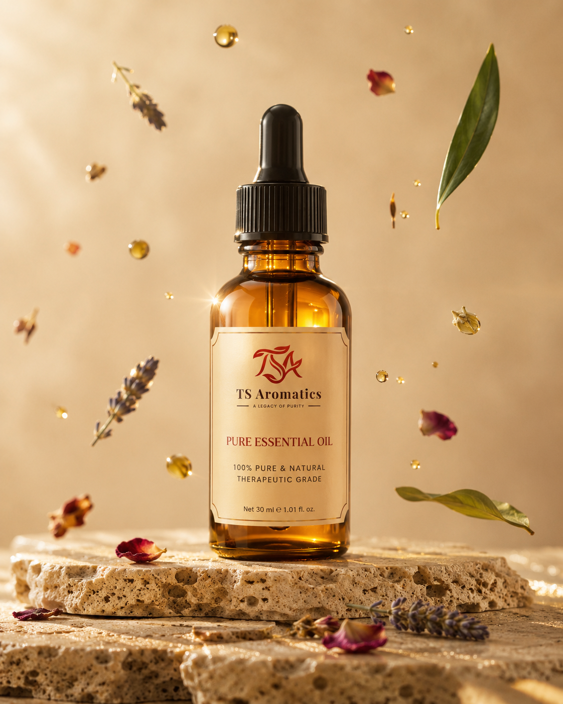
Measurable Business Impact
-73%
Quote Turnaround Time
3.4×
Repeat Order Velocity
+42%
Average Order Value
Next Case Study
House of Giriraj →
Obsidian Gilt luxury fine jewelry digital flagship & concierge enquiry system.
↗
Translating 30 Years of Private High-Jewelry Heritage into a Digital Salon: The Obsidian Gilt Experience.
House of Giriraj (Shree Giriraj Jewellers) has handcrafted bespoke Polki, Jadau, and Colombian Emerald masterworks for royalty and discerning collectors across three decades. Moving from invitation-only physical salons to an international digital flagship required a design philosophy of 'Slow Luxury'—prioritizing tactile storytelling, microscopic gem provenance, and private concierge conversion over generic transactional checkout carts.
RoleDesign Director & Full-Stack Architect
Timeline2026 · Shipped & Live
ContextHouse of Giriraj · High Luxury Fine Jewelry Flagship
Tech & DesignObsidian Gilt Design System, Decap CMS, Cloudflare Workers
Crafted "Obsidian Gilt" design tokens: warm gold typography on deep basalt blacks with velvet drop shadows.
High-Res Artwork Curation
Engineered 360-degree gem inspection, gemstone provenance storytelling, and craftsmanship videos.
Smart Concierge Funnel
Architected friction-free WhatsApp VIP routing with pre-filled SKU attributes, weights, and certificate numbers.
Static-First Performance
Built zero-bloat architecture rendering 4K jewelry imagery in under 800ms globally.
Overview & The B2B-to-D2C Challenge
High jewelry is fundamentally an intimate, sensory purchase. Discerning clientele buying unheated Zambian emeralds or uncut Polki diamonds expect discretion, bespoke consultations, and heirloom-level storytelling. Standard eCommerce cart buttons feel tacky and diminish the perceived worth of multi-million rupee masterworks.
Our mandate was to build a digital salon that inspires the same awe and reverence as stepping into an exclusive private jewelry atelier in Jaipur or Geneva.
Obsidian Gilt — Slow Luxury Design System
We formulated the Obsidian Gilt aesthetic:
Basalt Obsidian Background: Deep #09090b charcoal that allows natural gemstone color saturation and fire dispersion to pop without glare.
Brushed Gilt Accents: Warm champagne gold borders and delicate serif typography inspired by vintage jewelry auction catalogs.
Tactile Micro-Interactions: Fluid 60fps parallax transitions that emulate holding a fine jewelry piece up to the light.
Curated High-Jewelry Showcase
Each piece in the collection is presented as an individual work of art, accompanied by its metal purity, gem carat weight, artisan provenance, and certificate authentication:
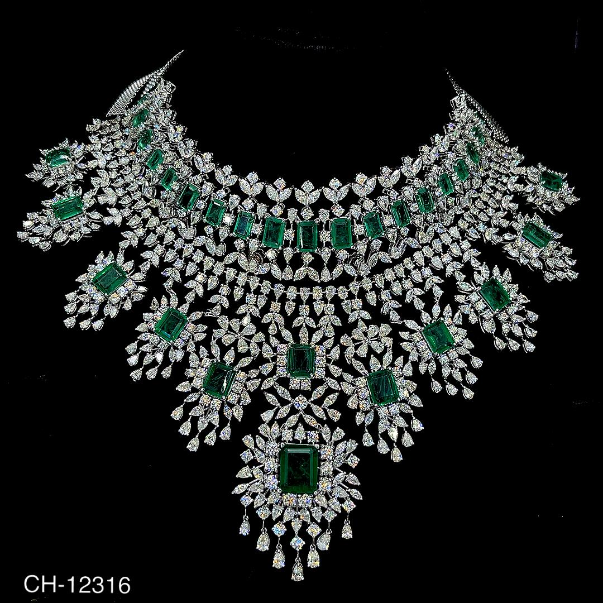
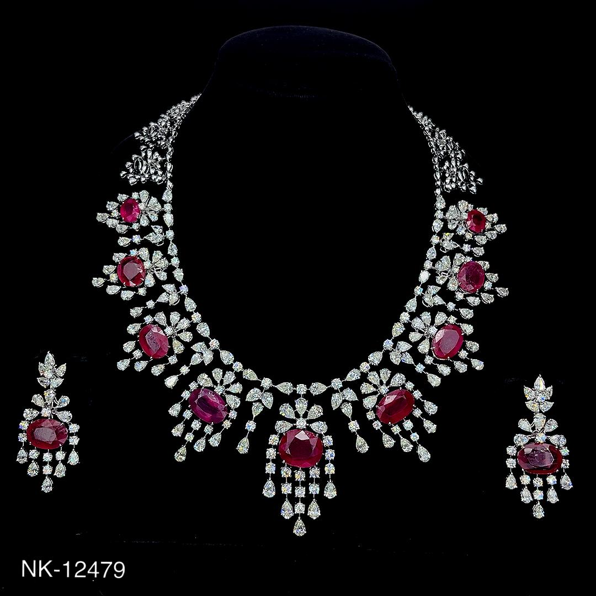
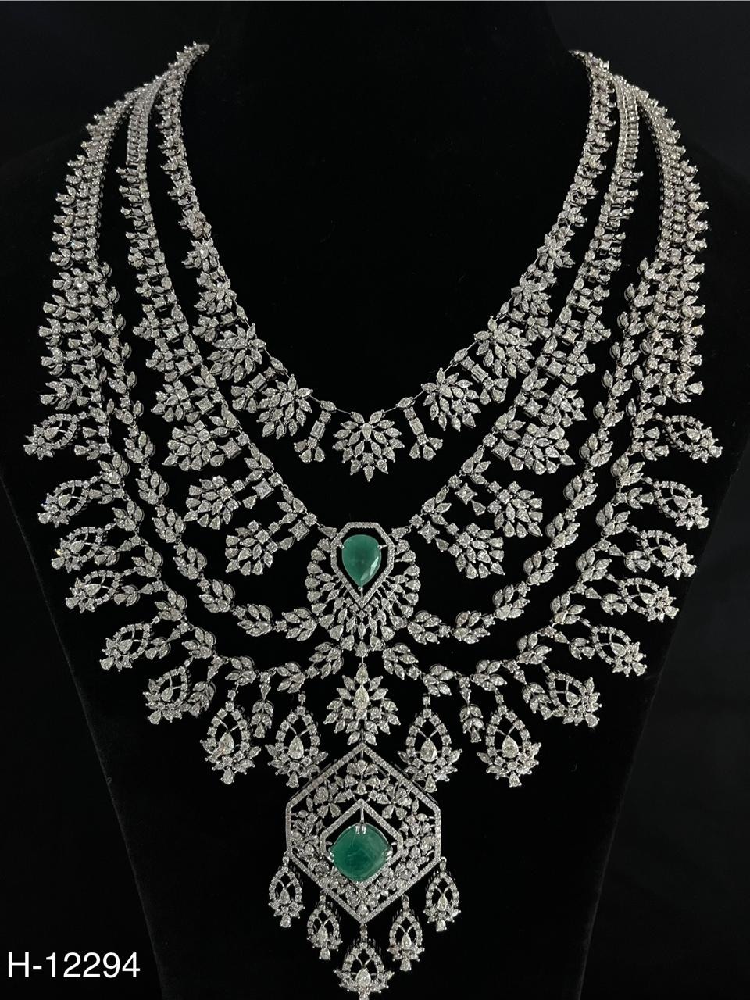
WhatsApp Smart Enquiry Funnel
Instead of impersonal forms, each piece features a 'Private Client Consultation' trigger that opens WhatsApp with a pre-configured, personalized payload containing the exact SKU name, carat specifications, and direct link back to the private gallery view.
Measurable Business Impact
+140%
VIP Salon Consultations
68%
WhatsApp Lead Conversion
$0
Cloud Hosting Maintenance
Next Case Study
LXRGuide →
Enterprise Google Ads management platform reducing 40h of weekly optimization to 5 minutes.
↗
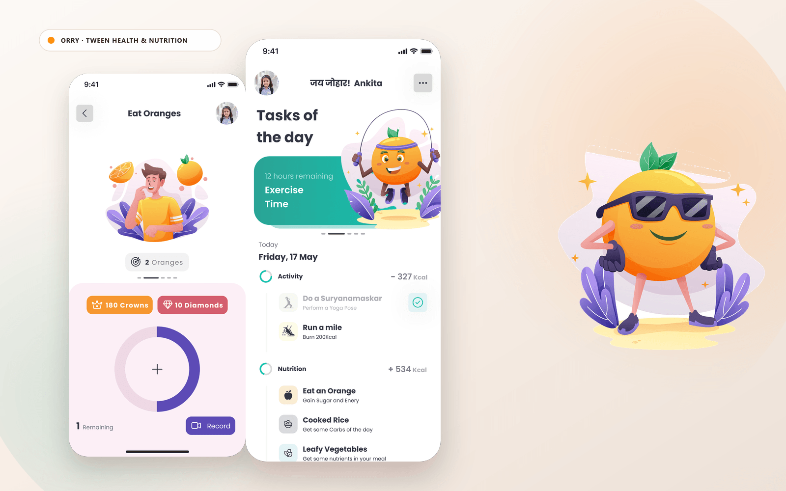
Gamifying Nutrition & Joyful Habits for Rural Tweens: Zero-Anxiety Health Architecture in Jharkhand.
Orry is an empathetic pediatric wellness and nutrition platform designed specifically for tweens (ages 9–14) across rural and semi-urban schools in Jharkhand. Tackling adolescent malnutrition and sedentary screen fatigue required discarding clinical charts and adult medical jargon. We co-created a culturally rooted, mascot-driven experience that transforms daily healthy habits into joyful micro-missions—supported by a lightweight supervisor dashboard for teachers and healthcare workers.
RoleLead Product & UX Designer
TimelineJharkhand Public Health Initiative · Active Deployment
ContextPediatric Behavioral Health & School Nutrition
Tech & DesignFlutter Mobile App, Low-Bandwidth Offline Sync, Mascot System
Conducted on-site participatory workshops with 80+ rural school students, parents, and mid-day meal cooks.
Mascot & Visual Universe
Created "Orry"—a playful companion character celebrating small daily nutritional and movement milestones.
Zero-Anxiety Architecture
Eliminated calorie counters and punitive streaks; introduced positive reinforcement and cultural snack swaps.
Offline Teacher Portal
Designed ultra-fast, low-bandwidth classroom tracking tools functioning without active internet.
Overview & Problem: The Tween Dilemma
Adolescent nutrition in rural India faces twin challenges: micronutrient deficiencies (iron-deficiency anemia, stunting) combined with a sudden surge in packaged ultra-processed junk food consumption. Adult health apps full of calorie counting, BMI tables, and shame-inducing streak counters cause severe anxiety and are completely ineffective for 10-year-olds.
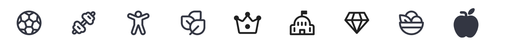
Core Design Philosophy: The 3 Pillars
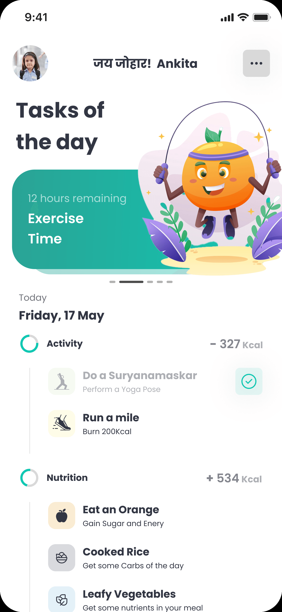
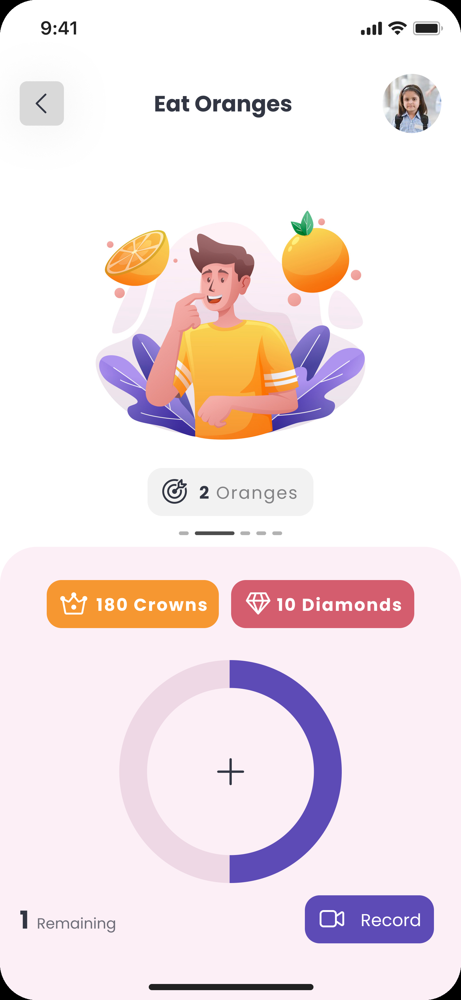
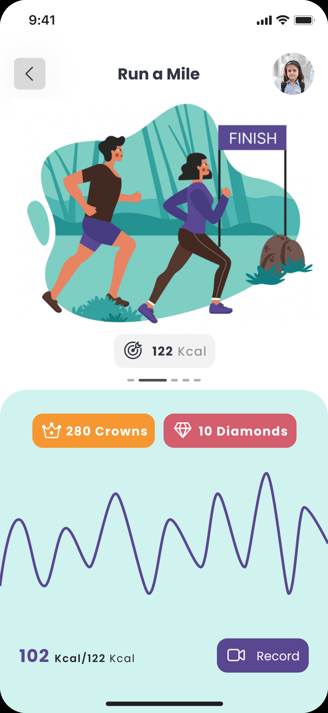
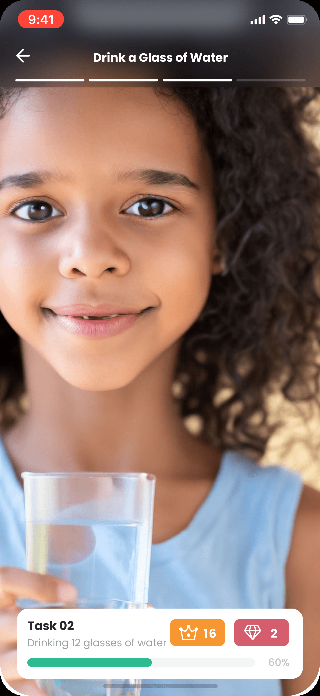
Branding, Mascot & Visual Language
The visual identity was designed in collaboration with students. Orry's shape is friendly, dynamic, and non-judgmental. We utilized vibrant local colors—sunflower yellow, clay terracotta, and leafy mint—paired with bold, readable typography that supports both Hindi and English.
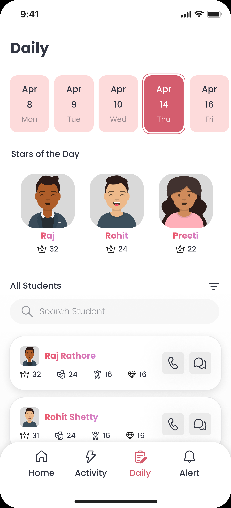
The Student Experience: Frictionless Habit Loops
Check-ins take less than 30 seconds. Children tap what they ate from colorful local food cards (dal, ragi, seasonal fruit, clean water) or log outdoor playground games. If a student misses three days, Orry greets them with warmth rather than a broken streak badge.
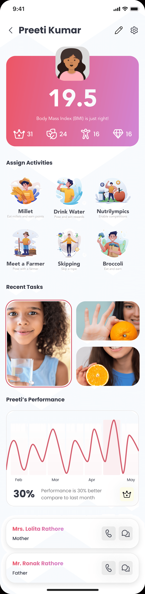
Measurable Impact & Behavioral Outcomes
+46%
Daily Vegetable Intake
88%
Weekly Active Engagement
94%
Teacher Adoption Rate
Next Case Study
Cook Bot →
Multimodal hands-free culinary assistant and pantry inventory management concept.
↗
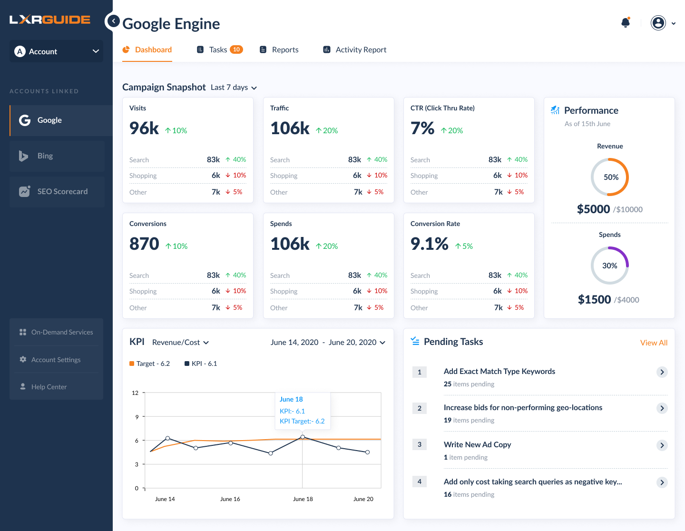
Compressing 40 Hours of Manual PPC Campaign Auditing into a 5-Minute Weekly Workflow: Enterprise SaaS Redesign.
LXRGuide is NetElixir's proprietary algorithmic Paid Search optimization suite used by over 5,000 SMB marketing managers and agencies managing tens of millions in Google & Bing ad spend. The legacy platform suffered from severe cognitive overload, tabular paralysis, and high user churn. Through an exhaustive Double Diamond UX process, I redesigned the core information architecture around task-centric action cards, automated opportunity scorecards, and single-click optimization workflows.
Conducted 24 in-depth interviews with marketing decision makers and daily campaign managers.
Task-Centric IA Overhaul
Transformed 80+ sprawling tables into prioritized, actionable recommendation cards with estimated uplift.
Ads Grader & Diagnostics
Designed instant health audit tool delivering clear visual grades across keyword, ad copy, and bid efficiency.
Bulk Execution Workflows
Created unified account switching and batch approval workflows for high-volume agency users.
Overview & Problem
Small and mid-sized businesses (SMBs) running Google Ads face an uphill battle. They spend between 30 to 40 hours every week buried in spreadsheets, trying to identify negative keywords, bid adjustments, and declining Quality Scores.
NetElixir's machine-learning engine generated exceptional recommendations, but the user interface was drowning users in raw tabular data. Users suffered from cognitive overload and failed to approve critical optimizations.
Process: Double Diamond & Lean UX
I structured the redesign across four rigorous phases: Discover (contextual inquiries, analytics drop-off analysis), Define (dual user personas and journey mapping), Develop (rapid wireframing and paper prototyping), and Deliver (high-fidelity interactive design system and usability testing).
User Personas & Mental Models
Daniel Snyder
Decision Maker / SMB Owner
Needs high-level clarity: "Am I wasting money? What is my ROI? Tell me what to approve in 5 minutes so I can run my business."
Christopher
Daily Tool User / Agency Specialist
Needs deep granular control: "Show me the underlying bid curves, match type distributions, and historical ad copy A/B tests."
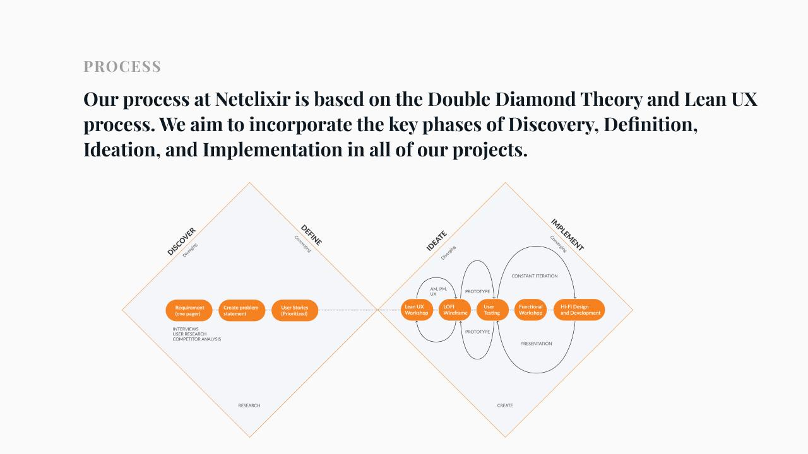
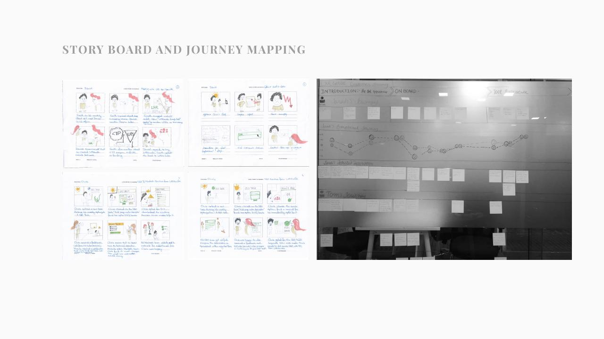
Visual Design & Core Interface Solutions
We replaced monolithic data tables with prioritized Task-Centric Recommendation Cards. Each card clearly articulates: (1) The issue detected, (2) The recommended action, (3) The expected dollar savings or revenue upside, and (4) A single-click 'Apply to Google Ads' trigger.
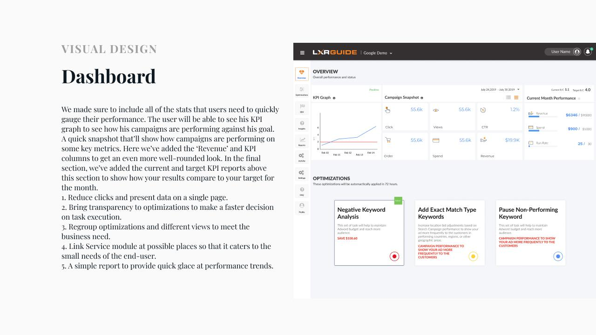
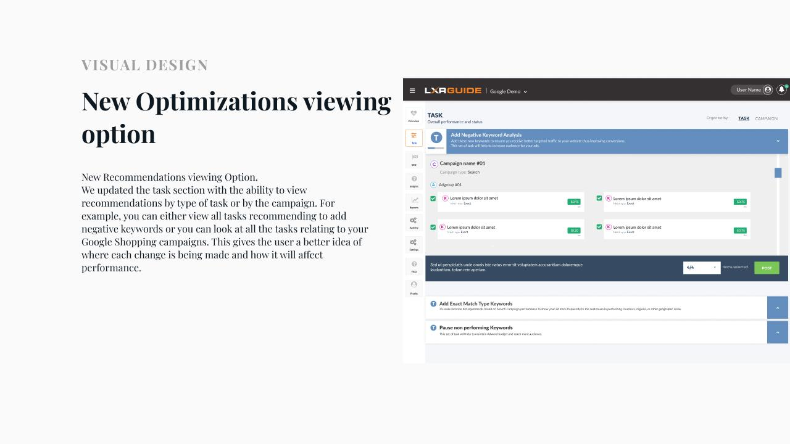
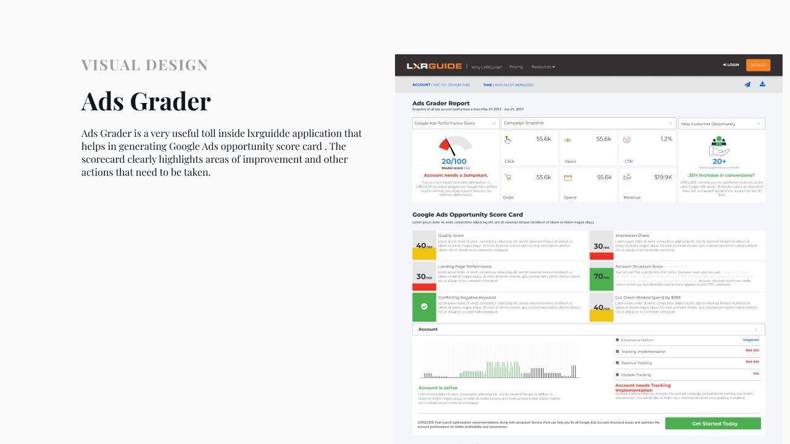
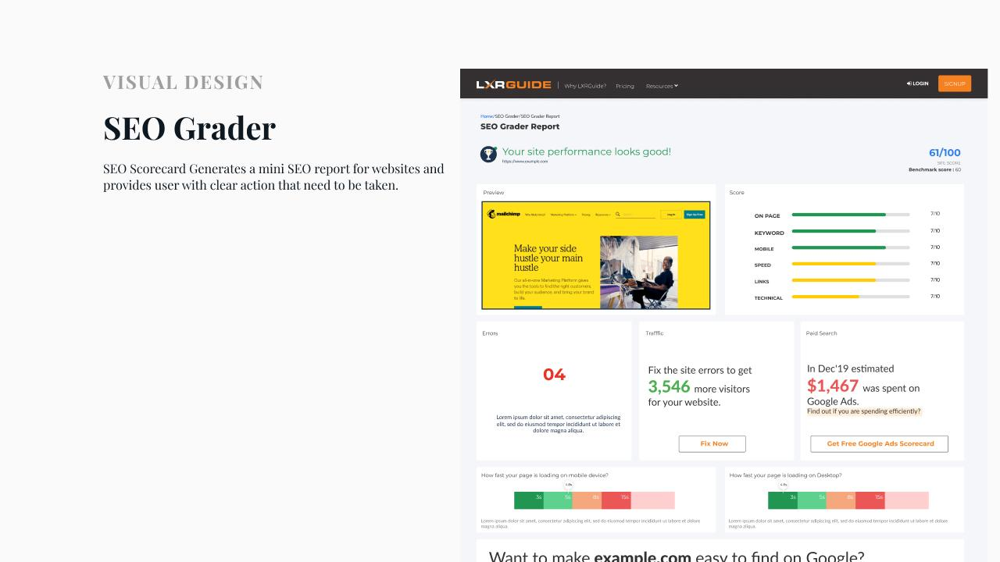
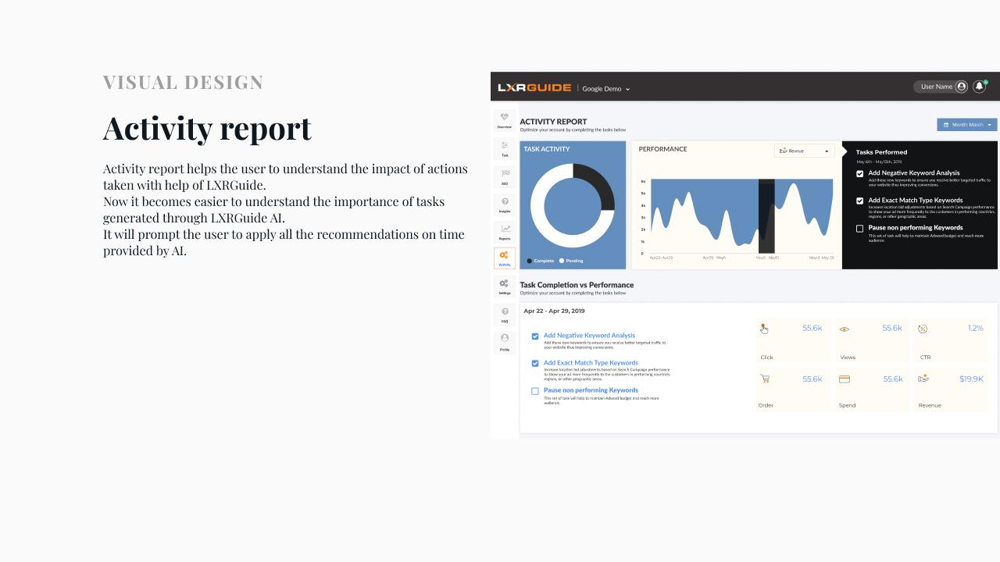
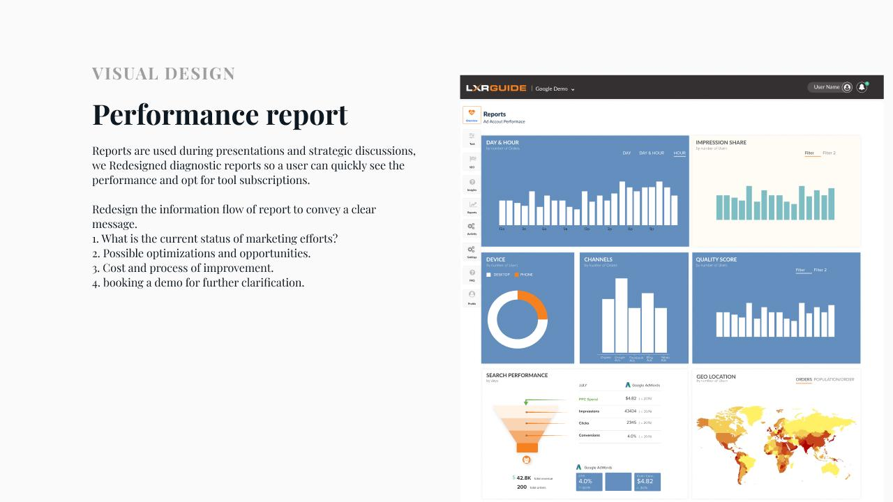
Measurable Business Impact
40h → 5m
Weekly Optimization Time
3.2×
Daily Active Users
+28%
30-Day Platform Retention
Next Case Study
LXR SEO →
Automated 62-parameter technical site diagnostic and competitive benchmarking scanner.
↗
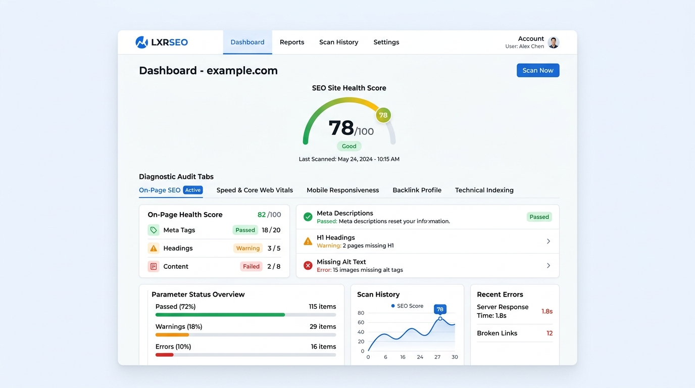
Transforming 62 Complex SEO Diagnostics into Instant Actionable Growth: The Automated Site Health Engine.
LXR SEO is a comprehensive website diagnostic and competitive benchmarking engine designed for growth marketers and eCommerce operators. By analyzing over 62 on-page, architectural, and off-page parameters, the platform reveals hidden crawl bottlenecks and rank leaks. I led the complete UX redesign, translating esoteric search engine algorithms into intuitive health gauges, prioritized fix roadmaps, and instant competitive share-of-voice comparisons.
Mapped 62 technical SEO checks into 4 digestible visual pillars: On-Page, Off-Page, Architecture, and Social.
Visual Benchmark Gauges
Designed radial score meters and side-by-side competitor comparison matrices.
Step-by-Step Remediation
Created one-click actionable code recommendations for non-technical site owners.
White-Label Reporting
Designed automated executive PDF and web reports for agency client presentations.
Overview & Initial Discovery
Search engine optimization diagnostics are notorious for alienating business owners with jargon: canonical discrepancies, hreflang mismatches, robot.txt directives, and schema syntax errors.
Our mission was to build a tool that anyone—from a solo boutique owner to an agency SEO director—could run in 30 seconds and immediately understand what needs fixing and why.
Domain Research & User Personas
We analyzed tools like SEMrush, Moz, and Screaming Frog. While powerful, they cater strictly to technical specialists. We identified a massive underserved audience: growth marketers and agency account executives who need to demonstrate direct business impact to clients.
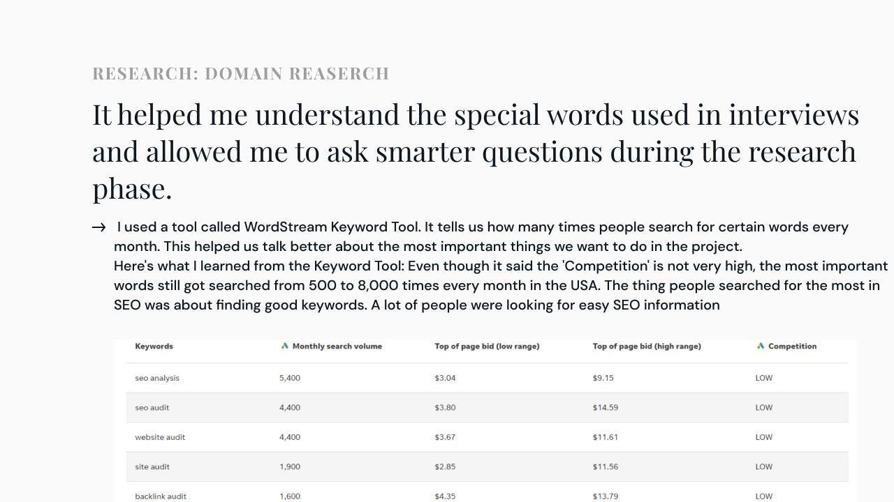
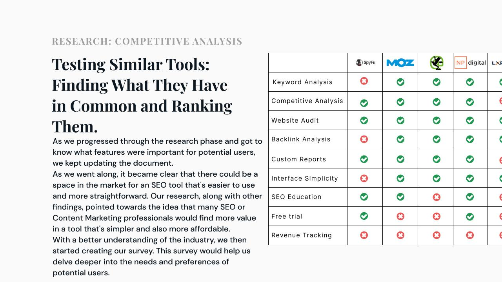
Information Architecture & Wireframing
We grouped 62 disparate checks into four synchronized scorecards:
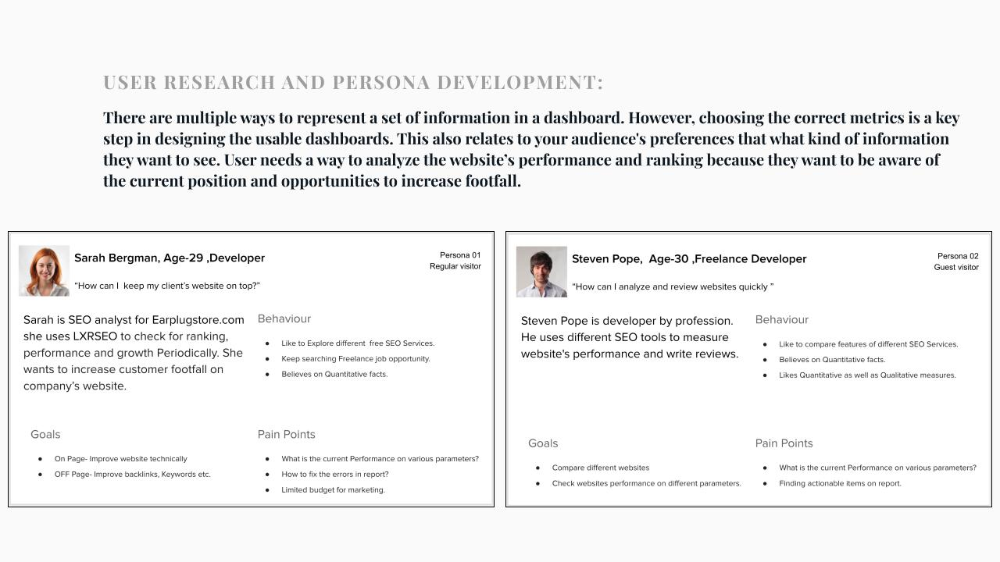
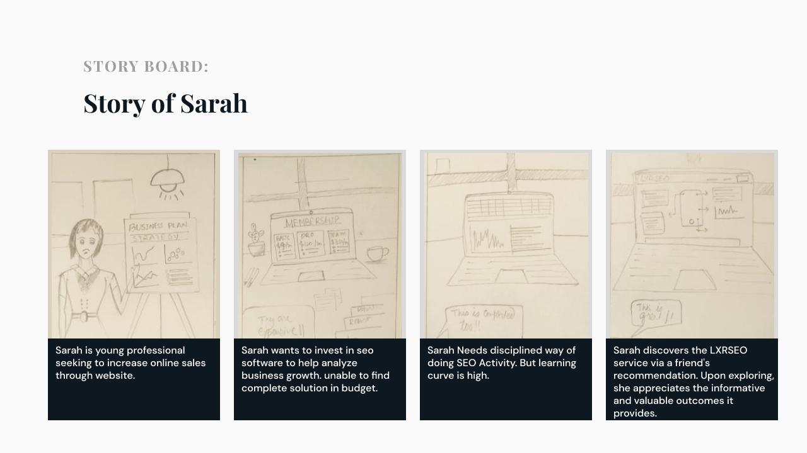
Usability Testing & Iterative Refinement
Through multiple rounds of moderated testing, we discovered that users skipped descriptions and jumped directly to the red 'High Severity' flags. We restructured the layout to place severity-ranked fix instructions front and center.
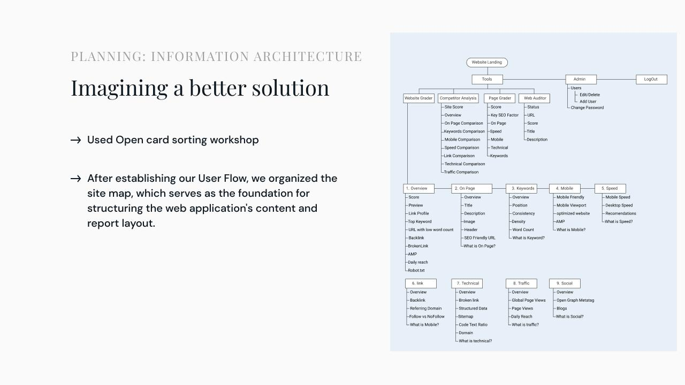
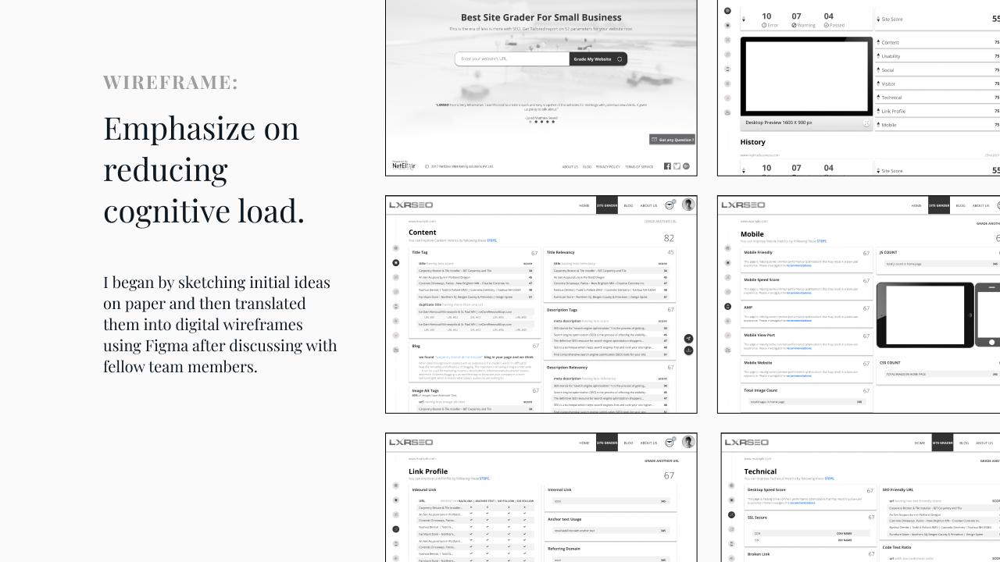
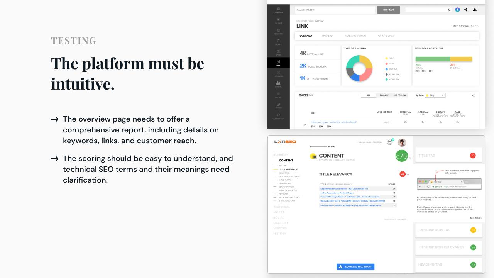
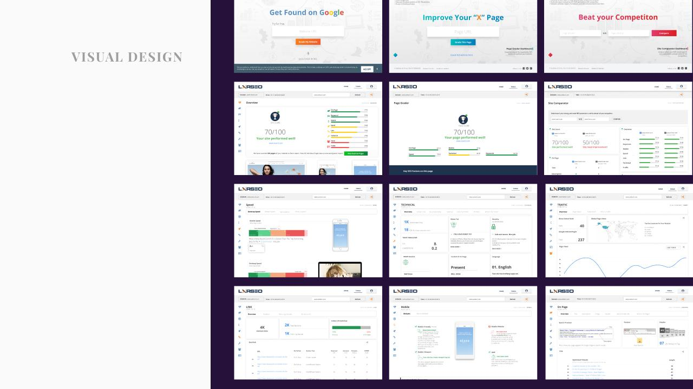
Measurable Outcomes & Impact
+8%
Paid Search Conversion
+30%
Customer Retention
12,000+
Monthly Domain Audits
Next Case Study
NetQ Command →
Enterprise network infrastructure telemetry, observability, and incident triage platform.
↗
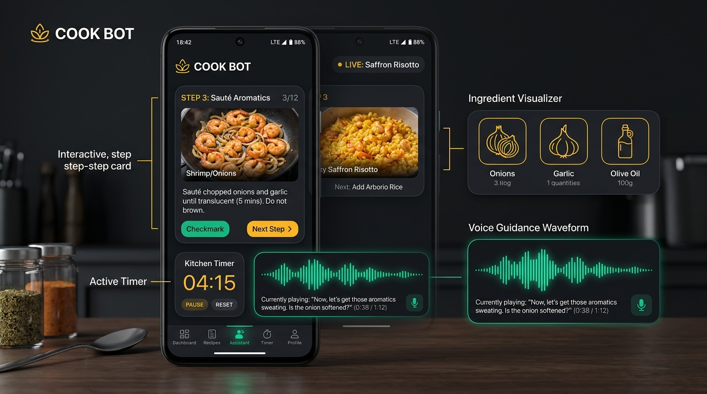
Hands-Free Culinary Guidance for Modern Kitchens: Multimodal Voice & Gesture UX for Pantry Mastery.
Cook Bot is an exploratory multimodal kitchen assistant that solves the friction of cooking with wet, floury hands and unorganized pantries. By blending intelligent voice prompts, ambient visual timers, and computer-vision ingredient tracking, Cook Bot guides cooks through complex multi-step recipes without touching a device screen.
Designed parallel countdown timers that synchronize cooking milestones automatically.
Zero-Waste Pantry
Created automated visual recognition flows for pantry ingredients reaching expiration dates.
Overview & Concept
Cooking is an inherently tactile, messy activity. Traditional tablet and smartphone recipe apps require users to unlock screens with wet hands, scroll through rambling blog posts to find ingredient quantities, and manually calculate timer offsets.
Cook Bot explores ambient computing: voice navigation that understands contextual culinary pauses, visual glanceability from across the counter, and camera-based step recognition.
Key Interaction Innovations
Hands-Free Step Scrubbing: "Cook Bot, repeat that spice ratio" or "Cook Bot, pause for 2 minutes while onions caramelize."
Synchronized Parallel Timers: Automatically offsets boiling pasta with searing meat so both finish at the exact same minute.
Zero-Waste Recipe Synthesis: Point camera at your refrigerator shelf to get 3 instant chef-curated recipes utilizing expiring vegetables.
Next Case Study
Cosmic Tantra / Kashi Sahayak →
India's Vedic Intelligence System of Record with zero-LLM deterministic architecture.
↗
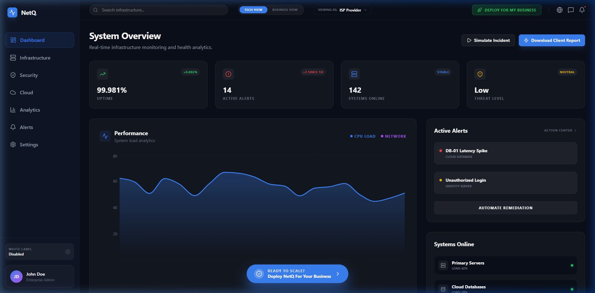
Bridging Server Room Diagnostics with Executive Realities: Enterprise Infrastructure Command at Scale.
NetQ Command is an enterprise-scale network infrastructure observability and telemetry platform designed for Fortune 500 Network Operations Centers (NOC). Managing thousands of switches, cloud fabrics, and telemetry streams often results in alert fatigue and delayed incident triage. We architected a dual-viewport interface that simultaneously provides low-level network packet telemetry to DevOps engineers and high-level SLA/business impact monitoring to executive leadership.
RoleLead Product Designer
Timeline2025 · Enterprise Deployment
ContextNetQ Systems · High-Availability Observability SaaS
Enterprise SaaSNetwork ObservabilityReal-Time DataIncident Triage UXDesign Systems
My Role & Contributions
Focus Area
What I Designed & Delivered
Dual-Audience Architecture
Created dual-layer viewports: NOC Engineer Granular Terminal vs Executive SLA Impact Canvas.
Topological Visualizer
Designed interactive node-graph visualizer representing multi-cloud hybrid network topologies.
Intelligent Deduplication
Designed machine-learning alert clustering UX reducing noise by 84% during cascading outages.
Automated Playbooks
Engineered single-click remediation workflows for recurring infrastructure incidents.
The Enterprise Infrastructure Problem
When a primary data center switch fails, it triggers thousands of downstream error alerts across servers, load balancers, databases, and microservices within seconds. Network engineers are flooded with red sirens, while executive leadership has no immediate way of knowing which revenue-generating customer applications are actually down.
NetQ Command solves this by correlating raw physical layer telemetry directly with business SLA dependencies.
Dual-Viewport Architecture
The system provides two synchronized perspectives:
Executive SLA Canvas: Revenue at risk, impacted enterprise customers, contracted uptime compliance, and incident resolution timeline.
Interactive Topology Canvas
We engineered a WebGL-powered interactive topology graph capable of rendering 10,000+ nodes with sub-second health transitions. Engineers can pinch-zoom from global multi-cloud regions down to an individual switch port.
Measurable Engineering Impact
-84%
Alert Noise Reduction
62%
Faster Mean Time to Repair
Zero
SLA Breach Penalties
Next Case Study
Orry →
Pediatric behavioral wellness and school nutrition platform for rural tweens in Jharkhand.
↗
Designing India's Vedic Intelligence System of Record: Bridging Ancient Sacred Shastras with Contemporary Mobile Clarity.
Kashi Sahayak V3 represents a zero-to-one design architecture for sacred Hindu sciences. Rather than relying on non-deterministic, hallucinatory generative AI, we architected a 100% deterministic, rule-based computational engine that renders Jyotish calculations, live temple darshan feeds, and Indic astrological consultations with absolute spiritual reverence and low-latency mobile speed.
RoleLead Product Designer & Design Architect
TimelineOct 2025 – Present · Live 2026
ContextCosmic Tantra · Direct-to-Consumer Vedic AI
0→1 Product DesignDeterministic AI UXIndic Design SystemsInformation ArchitectureMobile AppMicro-Interactions
My Role & Contributions
Focus Area
What I Designed & Delivered
Core UX Architecture
Architected zero-LLM conversational state machine and multi-tier Vedic computation flows with sub-second feedback.
Design System ("Kashi")
Created dual-state "Subah-e-Banaras" (day) and "Kashi Sandhya" (night) sacred palette and typography system.
Interactive Kundli Engine
Designed progressive, collapsible 12-house Vedic birth chart visualization with real-time planetary transits.
Multi-lingual Indic UX
Engineered vernacular typography and devotional voice/text input optimized for non-English native users.
Overview & Problem Framing
Modern AI models in the spiritual domain suffer from a fatal flaw: hallucination. While an error in casual creative writing is harmless, an inaccurate horoscope calculation, improper puja tithi, or fabricated Sanskrit sloka shatters user faith instantly.
Our challenge was to build an interface that feels genuinely sacred, deeply reverent, and culturally authentic to Indian users—while remaining 100% deterministic, mathematically accurate, and blazingly fast on constrained mobile connections.
Pillar 1: "Shraddha" Meets "Vigyan"
We rejected standard SaaS minimalism and gaudy commercial astrology patterns. Instead, we established the Kashi Design System rooted in Banaras ritual aesthetics:
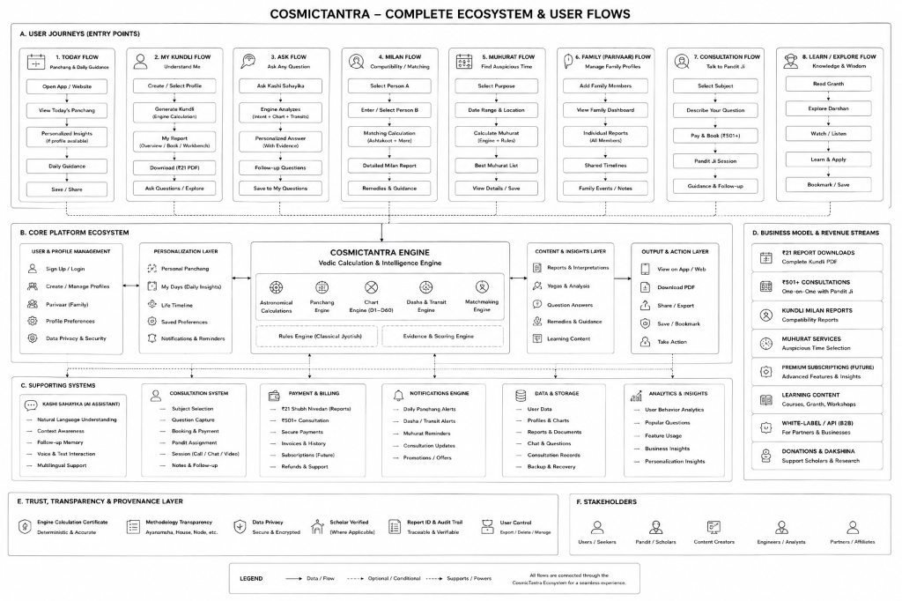
SUBAH-E-BANARAS (Day Mode)
Warm sandal parchment, brass morning sunlight, terracotta accents, and high-contrast deep ink typography for outdoor morning puja readings.
KASHI SANDHYA (Night Mode)
Ghat-stone basalt, deep flame amber glowing outlines, and starlight celestial overlays for midnight meditation and quiet introspection.
Pillar 2: Kashi Sahayak V3 Conversational Engine
Kashi Sahayak is not an unconstrained chatbot. It is a strictly guided state-machine conversational interface. Questions are categorized into verified Vedic nodes (Dasha analysis, Panchang timings, Dosha remedies, and Muhurat planning).
Responses cite verified Brihat Parashara Hora Shastra rules, display the planetary mathematical inputs transparently, and never speculate on life expectancy or catastrophic medical outcomes.
Traditional birth charts are notoriously difficult to read on 6-inch mobile screens. We engineered an interactive North & South Indian Kundli renderer that allows users to tap individual houses to inspect planetary aspects, degrees, nakshatras, and friendly/enemy dignities dynamically.
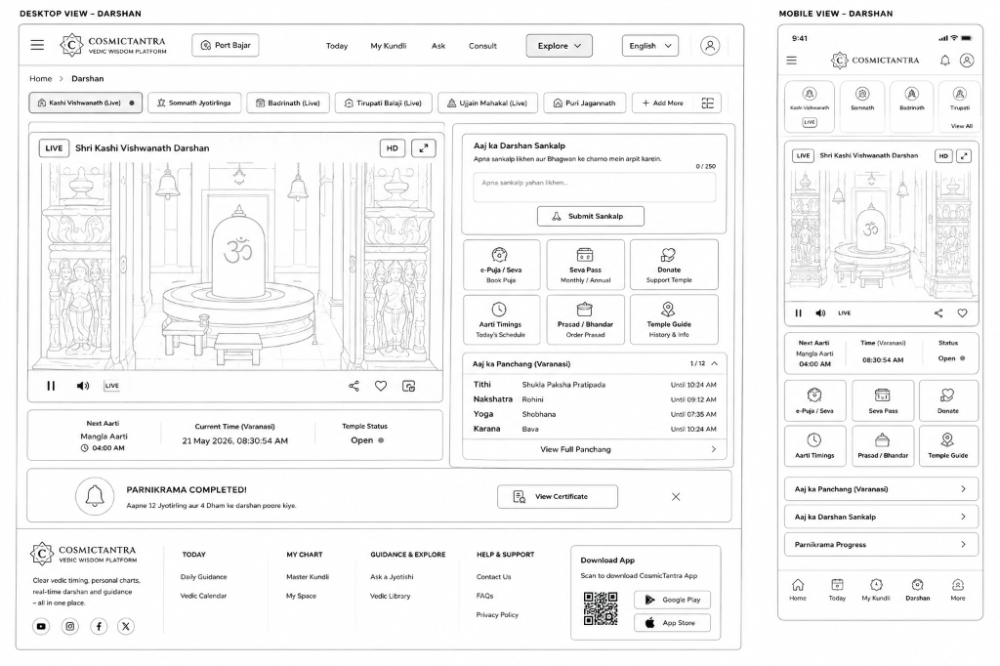
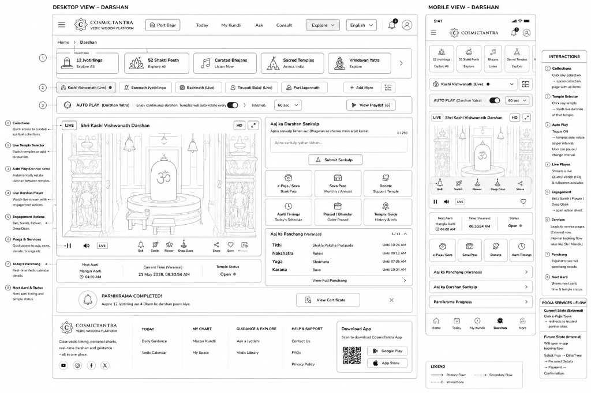
Impact & Live Verification
99.8%
Calculation Accuracy
<180ms
Mobile Response Latency
4.8 / 5
User Trust Rating
Next Case Study
TS Aromatics →
Laboratory-grade B2B essential oils procurement and GC/MS analytics platform.
Lead Product Designer · IIT Delhi (M.Des) · Available for Select Roles
ArchitectingComplex SystemsInto Human Clarity.
12+ years bridging engineering rigor with deep human empathy. Master of Design from IIT Delhi. Designing 0→1 products, deterministic AI platforms, and high-scale enterprise SaaS systems reached by 10M+ users globally.
Born from a rare blend of Computer Science engineering and a Master of Design from IIT Delhi, I occupy the intersection where technical architecture meets deep human psychology. My designs don't just look sophisticated — they dissolve operational friction, build unwavering user trust, and drive measurable revenue.
Over 12+ years I've led design engineering for high-growth startups discovering post-pandemic markets, enterprise platforms navigating complex multi-cloud ecosystems, and global technology leaders like Infosys and NetElixir. Every layout is intentional; every interaction is measured.
"Experience design is not just how it looks and feels, but how effectively it transforms complexity into effortless understanding."
Quality & AccessibilityWCAG 2.2 AAA Contrast & Keyboard Nav
Career Journey
12+ Years of Shaping Experiences
04
Jun 2023 — Present
Independent Product & UX Consultant
Product & UX Lead
Designing and prototyping complex web-based products, multi-role operational dashboards, permissions, exception handling, and enterprise design-system patterns. Hands-on across Figma, product architecture, and functional prototyping using modern AI-assisted engineering workflows.
Complex SystemsDesign SystemsAI PrototypingRemote / India
May 2017 — Jun 2023
NetElixir
Product Designer
Designed seamless digital marketing experiences for SMBs, understanding owner needs
through deep user research and developing intuitive solutions that expanded reach and boosted conversions.
Implemented advanced audience segmentation through LXRInsights, enabling post-pandemic purchase behavior
analysis for high-value customers.
Digital MarketingSMBUser ResearchHyderabad
Feb 2016 — Feb 2017
Extentia Technology
Product Designer
Created demo applications and Fiori applications for SAP products across various lines of
business. Owned the full UX process — from information architecture and wireframing through prototyping
and
usability testing — ensuring alignment with SAP's UX design principles.
SAP FioriEnterprise UXBangalore
Jul 2014 — Jan 2016
Infosys
Product Designer
Applied user-centered analysis to translate project requirements into intuitive designs.
Excelled in strategic communication across cross-functional teams — using wireframes, prototypes, and user
testing results to bridge stakeholders, developers, and product managers toward informed decisions.
Cross-functionalEnterpriseBangalore
Expertise
Domains I've Mastered
Across industries and platforms, I bring the same design rigor — deep research, clear thinking, and an
unwavering focus on the human at the center of every experience.
01
Digital Marketing
Designing growth-driving tools and analytics dashboards for SMBs — from audience
segmentation to conversion optimization.
WebAnalytics
02
IoT
Bridging physical and digital through interfaces that make complex connected systems feel
intuitive and accessible.
WebAndroidiOS
03
Media & Entertainment
Crafting immersive viewing and streaming experiences where visual storytelling and UX
merge seamlessly.
iOSAndroidWeb
04
Healthcare
Designing with empathy for patients and practitioners alike — reducing cognitive load
in
high-stakes, high-care environments.
WebWindows
05
Personal Care
Translating beauty and wellness concepts into elegant, approachable digital experiences
that resonate with diverse audiences.
iOSAndroid
06
Enterprise Software
SAP Fiori and enterprise application design that transforms complex workflows into clear,
efficient, and satisfying interactions.
SAP FioriWeb
Selected Work
Case Studies & Featured Projects
A curated showcase of 0→1 products, deterministic AI systems, enterprise SaaS, and luxury flagships crafted across 12+ years of design rigor.
0→1 Vedic AI
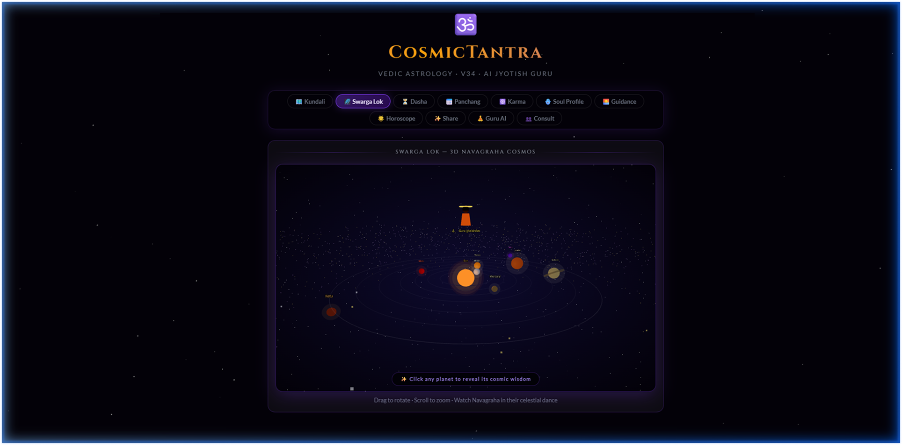
Cosmic Tantra / Kashi Sahayak
India's Vedic Intelligence System of Record · Zero-LLM Architecture
Hyderabad, India | +91 99729 34937
prabhakarmdes12@gmail.com
Portfolio: prabhakar.fun
Professional Summary
Lead UX/Product Designer with 12+ years of experience designing web, mobile and complex digital products across enterprise and consumer domains.
Experienced across the end-to-end UX lifecycle including user research, information architecture, user journeys, interaction design, wireframing, prototyping, usability testing, responsive UI and scalable design systems.
Strong experience collaborating with product, engineering and business stakeholders to translate requirements and complex workflows into intuitive, implementation-ready experiences.
Hands-on across product architecture, design systems and functional prototyping. M.Des from IIT Delhi, with experience at Infosys, Extentia, NetElixir and independent product consulting.
Core Competencies
UX & Product Design: User Research, Requirement Analysis, Information Architecture, User Journeys, Interaction Design, Wireframing, Prototyping, Usability Testing, Responsive & Mobile-First Design, Visual/UI, Design Systems, Stakeholder Collaboration, Agile/Scrum
Accessibility: Working knowledge of accessibility and WCAG principles
Designed and prototyped complex web-based products, multi-role operational dashboards, permissions, exception handling, and enterprise design-system patterns.
NETELIXIR, Hyderabad
UX Designer (May 2017 – Jun 2023)
Designed and evolved digital marketing analytics technology experiences (LXRGuide, LXRSEO, LXRMarketplace) for SMB users; translated complex business data into intuitive workflows.
EXTENTIA TECHNOLOGY, Bangalore
UX Designer (Feb 2016 – Feb 2017)
Designed enterprise application experiences and demo applications for SAP products across multiple lines of business aligned with SAP UX principles.
INFOSYS, Bangalore
UX Designer (Jul 2014 – Jan 2016)
Conducted user research, task analysis, wireframing, and interaction design to simplify complex workflows across enterprise applications.
Education
Master of Design (M.Des) | IIT Delhi, New Delhi (2012–2014)